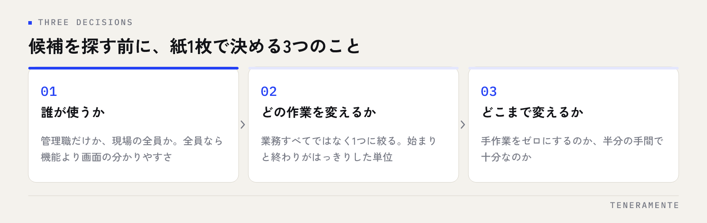

業務効率化ツールの選び方を相談されたとき、最初にお伝えしているのは「比較表を開くのはまだ早いです」ということです。ツール選びの成否は、候補を見比べる前の段階でほとんど決まります。何を解決したいのかが言葉になっていない状態で機能を並べても、選ぶ基準が育たないからです。
📌 この記事の結論
業務効率化ツールは、機能の多さではなく「誰の」「どの作業を」「どこまで」変えるのかを先に決めてから選びます。この3つが決まっていれば候補は自然に絞られ、決まっていなければどれを選んでも定着しません。
01業務効率化ツールの選び方でつまずくところ
多くの場合、検討は「良さそうなツールを探す」ところから始まります。検索して比較記事を読み、機能の一覧を見比べ、価格で絞る。一見まっとうな進め方ですが、この順番には落とし穴があります。比較表は、比べる軸をすでに持っている人のための道具だからです。
軸がないまま比較表を読むと、判断できる情報が「機能の数」と「値段」しか残りません。結果として、多機能で安いものが良く見えます。ところが実際に使われるかどうかを決めるのは、機能の総数ではなく、自社が毎日触る数個の画面が業務に合っているかどうかです。
もうひとつ起きやすいのが、課題の言い換えが雑なまま進むことです。「情報共有ができていない」という困りごとは、そのままでは解けません。誰が、どの場面で、何を探せずに手が止まっているのか。そこまで降ろして初めて、必要な道具の形が見えてきます。
02導入前に決める3つのこと
候補を探す前に、次の3つを言葉にします。紙1枚で構いません。ここが選定の基準そのものになります。

**1つ目は「誰が使うか」**です。管理職だけが見るのか、現場の全員が毎日触るのか。人数と、パソコンに慣れている度合いによって、選ぶべきものは変わります。全員が使う前提なら、機能の豊富さより画面の分かりやすさが優先されます。
**2つ目は「どの作業を変えるか」**です。一日の業務すべてではなく、ひとつの作業に絞ります。「月末の集計」「問い合わせの割り振り」のように、始まりと終わりがはっきりしている単位が扱いやすくなります。
**3つ目は「どこまで変えるか」**です。手作業をゼロにするのか、半分の手間にできれば十分なのか。ここを決めておかないと、検討の途中で要望がふくらみ、どのツールも「足りない」ように見えてきます。
03今やっている作業を書き出す
3つを決めるには、現状を書き出す作業が要ります。対象の業務について、手順を1行ずつ、実際にやっている順番で並べてください。理想の流れではなく、例外処理や手戻りも含めた実際の流れです。
書き出すと、たいてい2つのことが分かります。ひとつは、時間がかかっているのは作業そのものではなく探す・待つ・確認する時間だということ。もうひとつは、同じ情報を複数の場所に書き写している箇所があることです。
書き出すときのコツ
担当者本人に書いてもらうと、手順が理想化されがちです。実際の作業を横で見ながら、止まった場面をそのまま記録すると、改善できる箇所が見つかりやすくなります。
この棚卸しは、ツールを選ばずに終わることもあります。書き出した結果、入力の順番を入れ替えるだけで済む場合や、すでに使っているツールの機能で足りる場合があるからです。買わずに済むと分かることも、この工程の成果です。業務全体の整理のしかたは業務アプリ完全ガイドで詳しく扱っています。
04候補を比べるときに見る5つの項目
ここまで決まって、はじめて比較に入ります。見るべき項目は多くありません。
| 見る項目 | 確かめ方 |
|---|---|
| 毎日触る画面 | いちばん使う画面を実際に操作させてもらう |
| 入れるときの手間 | 既存データを移せるか、初期設定を誰がやるか |
| やめるときの手間 | 蓄積したデータを取り出せる形式があるか |
| 変えられる範囲 | 項目名や区分を自社の言い方に直せるか |
| 費用の増え方 | 人数が増えたとき、機能を足したときの金額 |
このうち見落とされやすいのがやめるときの手間です。使い続ける前提で検討するため、データの持ち出しは後回しになります。しかし数年分の記録が取り出せない形で溜まると、合わなくなっても動けなくなります。
費用も、月額の数字だけでは比べられません。人数が増えたときの上がり方、導入支援が別料金かどうかまで含めて並べてください。
05失敗する買い方の典型
うまくいかなかった事例には、いくつか共通した形があります。
- 比較表から始める：軸がないまま機能数と価格で選び、使わない機能に払い続ける
- 決裁者だけで決める：毎日使う人が触らないまま決まり、現場で使われない
- 全部を一度に変えようとする：対象を広げすぎて、移行そのものが止まる
- 導入を目的にする：入れた時点で完了とみなされ、運用ルールが決まらない
- 既存のやり方に合わせすぎる：現行の手順をそのまま再現しようとして、費用も手間も膨らむ
- 担当者が1人だけ：その人が異動した途端、誰も設定を触れなくなる
5番目は少し説明が要ります。今のやり方をそのまま移すと、非効率も一緒に移ります。かといって全部を捨てると現場が混乱します。残す手順と、この機会にやめる手順を、導入前に仕分けしておくのが現実的です。
06試用期間で確かめること
多くのツールには試用期間があります。この期間に「触ってみる」だけで終えると、判断材料は増えません。決めておくべきは、誰が、どの業務を、何日分入れてみるかです。
おすすめは、先月の実際のデータを1週間分そのまま入れてみることです。架空のデータでは例外が出てこないため、本番で詰まる箇所が見つかりません。実データを入れると、入力しづらい項目や、自社の区分に合わない選択肢がすぐに表面化します。
あわせて、入力にかかった時間を測っておきます。今のやり方と比べて増えているなら、定着しません。効率化のつもりが現場の負担増になるのは、この確認を飛ばしたときに起きます。
07選び終わってからが本番
ツールを決めたあとに必要なのは、運用の取り決めです。いつ入力するか、誰が設定を管理するか、うまくいかないときに誰へ相談するか。この3つが決まっていないと、数か月で入力が止まります。
既製のツールを一通り見たうえで「どれも自社の業務に合わない」と分かることもあります。それ自体は失敗ではなく、判断材料が揃った状態です。合わせるために業務を変える負担と、自社に合う形を作る費用を、同じ机の上で比べられるようになります。判断の目安は業務アプリは内製か外注かで整理しています。
TENERAMENTEでは、既製ツールで足りる部分と、作ったほうが早い部分を切り分けるところからご相談を承っています。業務の棚卸しをご一緒したうえで、必要な範囲だけを小さく作る進め方は業務改善AIアプリ開発にまとめました。何から手をつけるか迷っている段階でも構いませんので、ご相談からお気軽にお声がけください。